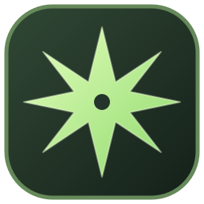

Instances that stay separate
Keep game versions, settings, and saves organized by world or friend group. One setup never has to break another.

NORTHSTARKeep every world, mod setup, and shader pack in one easy place. Northstar is a Windows desktop launcher for your local files and Microsoft account, with lighter defaults for modest PCs.
Pick up where you left off. Your setup stays yours.
Quick to understand on day one. Flexible enough to keep using when your worlds get bigger.
Keep game versions, settings, and saves organized by world or friend group. One setup never has to break another.
Open an instance's mods folder, drop in compatible files, and keep a clear view of what belongs to each setup.
Keep shader packs alongside the right instance. Add Iris or another compatible loader, then manage your packs in one spot.
Already installed the game and signed in? Your local worlds and files remain accessible when the connection drops. First-time downloads and sign-in need internet.
Conservative automatic memory allocation and a smaller launch window help keep defaults comfortable on lower-spec computers. Minecraft's in-game graphics settings remain yours to tune.
Switch anytime between Northstar green, Cosmic purple, warm Ember, and cool Aurora. Each theme carries its own colors and matching launcher icon.
Microsoft sign-in happens in a dedicated login window. Account tokens are stored using Windows encrypted storage.
Northstar runs as a Windows desktop app. The web page is the guide; the app is where your game lives.
Save and open the Windows installer from the download button.
Choose an install location. Windows may warn that this installer is unsigned.
Sign in with the account that owns Java Edition. Northstar never asks for your password in its own form.
Install compatible Java, choose Vanilla or Fabric, pick a version, and add compatible mods or shader packs.
Install Northstar, sign in to Microsoft, and keep your instances in one place.
A compatible Java runtime is required separately.
After you sign in and install the Minecraft version and its files, local single-player can be available offline. First login and first-time installation require internet. Microsoft may ask you to sign in again later.
Yes. Northstar does not provide game files or bypass account checks. Sign in with a Microsoft account that owns Java Edition.
Create a Vanilla or Fabric instance, then add compatible mod files. For shader packs, use Fabric with compatible Iris and place shader packs in shaderpacks. Mods must match your exact game version and loader.
Northstar keeps the launcher interface light, starts Minecraft in a smaller window, and chooses a conservative memory amount by default. Actual game performance depends on your computer, Minecraft version, mods, shaders, and in-game graphics settings.
This build does not have a code-signing certificate. For public distribution, sign the installer and publish it as a GitHub Release asset.